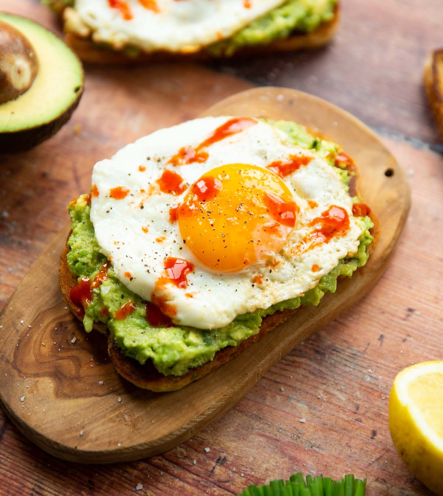

Avocado Toast with Egg

Description
This is a simple and delicious option for breakfast, which just
involves spreading some avocado on toast and adding an egg
over the top to complete the meal.
Ingredients
- 2 slices of Bread
- 1 medium sized Avocado
- 2 Eggs
- Salt
- Black Pepper
- Hot or Siracha sauce
Steps
-
Take your pieces of bread and toast using your preffered method
(toaster or over the stove with some butter).
-
While the bread is being toasted, take your avocado and slice it vertically through the center,
separating into two tall pieces.
-
To each piece of the avocado, take a knife and cut into it like a grid so as to make multiple
cubes of avocado.
-
Using a spoon, scoop and spread each avocado half on top of each piece of toast. Add salt and black pepper to taste.
-
Using a medium-sized pan with some oil coating the bottom over low-medium heat, crack your eggs in.
Cover the pan and allow the eggs to cook about 5-7 minutes.
- Once your eggs are a solid white, take off the heat and place eggs on your toast.
- Drizzle with chosen hot or siracha sauce over the top and enjoy!